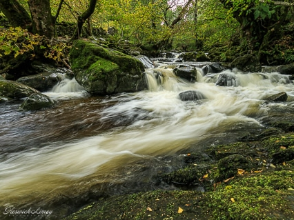
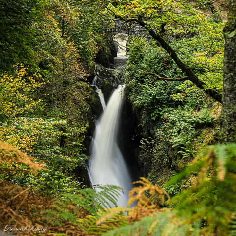
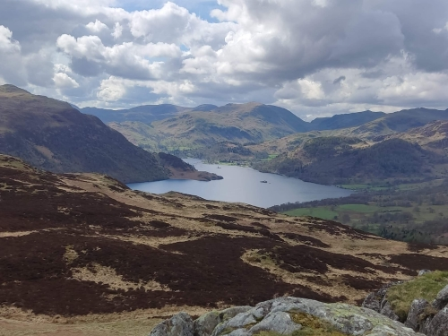
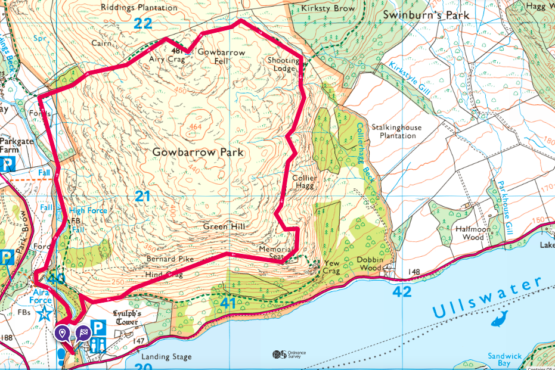
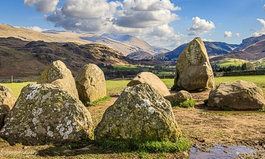
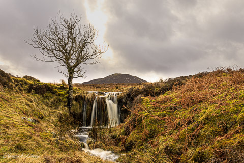
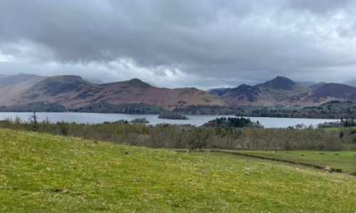
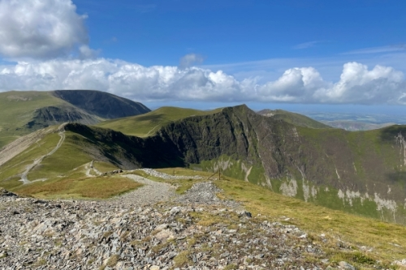
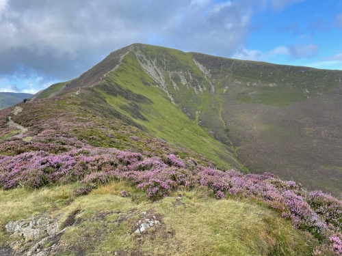
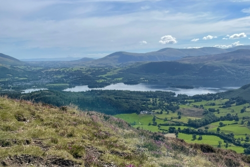

A selection of three routes, showcasing the varied landscape of the Wainwright Fells, to inspire your next walk.
Aira Force and Gowbarrow is a short and easy walk that has it all. The
Castlerigg and Ashness walk increases the distance while sticking to an easy route. Finally the
Coledale Horseshoe is ready to reward you if you can meet it's challenge of distance, steep sections and scrambles.
Aira Force and Gowbarrowa

Cascades on Aira Beck above Aira Force -
KeswickLimey

View of Aira Force -
KeswickLimey

View from Gowbarrow looking towards Ullswater and the central fells
Difficulty:
Easy
Length:
4 mi / 6.5 km
Ascent:
1164 ft / 355 m
Average time:
2 1/2 hours
Start and end point:
National trust Aira Force car park
About the walk
A short and easy walk that has it all. Beautiful woodlands, the impressive Aira Force waterfall,
numerous smaller waterfalls, a Wainwright peak and views over Ullswater as well as towards the other Eastern fells.
Make the walk your own
Start in Pooley Bridge or Glenridding and catch the Ullswater Steamer. Join in with any National trust
trails and activities. Choose a slightly different path route to the one shown here.

A suggested route for the Aira Force and Gowbarrow walk
Castlerigg and Ashnessa
Including: Walla Crag, Bleaberry Fell and High Seat

Castlerigg Stone Circle -
KeswickLimey

Waterfall and lone tree below Bleaberry Fell -
KeswickLimey

View from Walla Crag of Derwentwater and Catbells
Difficulty:
Medium
Length:
11.46mi / 18.45km
Ascent:
2470 ft / 753 m
Average time:
6 hours
Start and end point:
Keswick
About the walk
Ready to add in some distance, but looking to keep the route easy without any steep bits or scrambles? Then
this may be the walk for you. It visits both the ancient Castlerigg Stone Circle and the iconic Ashness Bridge,
while boasting spectacular views over both Derwentwater and Thirlmere and off towards the Helvelyn range.
Make the walk your own
Catch the Keswick Launch to take you back to Keswick, while enjoying being on the water
and resting your feet. Or shorten the walk by heading straight to Ashness Bridge after summitting Walla Crag.
A suggested route for the Castlerigg to Ashness walk
Coledale Horseshoea
Including: Grisedale Pike, Hopegill Head, Eel Crag/Crag Hill, Sail, Outerside and Barrow

Hobcarton Crag

Peak of Grisedale Pike

View from Barrow of Derwentwater and the fells behind
Difficulty:
Advanced
Length:
8.66 miles / 14 km
Ascent:
4057 ft / 1237 m
Average time:
5 and a half hours
Start and end point:
Braithwaite
About the walk
Ready to add in some height, some steep sections and some scrambles? If you are, then this walk will
reward you with experiencing the impressive Hobcarton Crag and spectacular views over the
North Western fells, back towards Derwentwater and Keswick and even across to the Solway Firth and
Scotland on a clear day.
Make the walk your own
Shorten the walk by descending back down after Hopegill Head via Force Crag Mine and along Coledale
Beck back to Braithwaite. Or, add in other Wainwrights such as Whiteside, Grasmoor, Wandope,
Whiteless Peak, Scar Crags or Causey Pike.